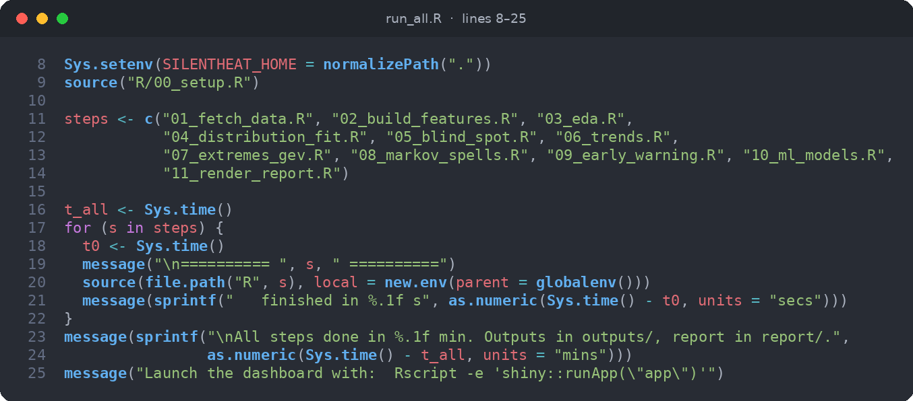
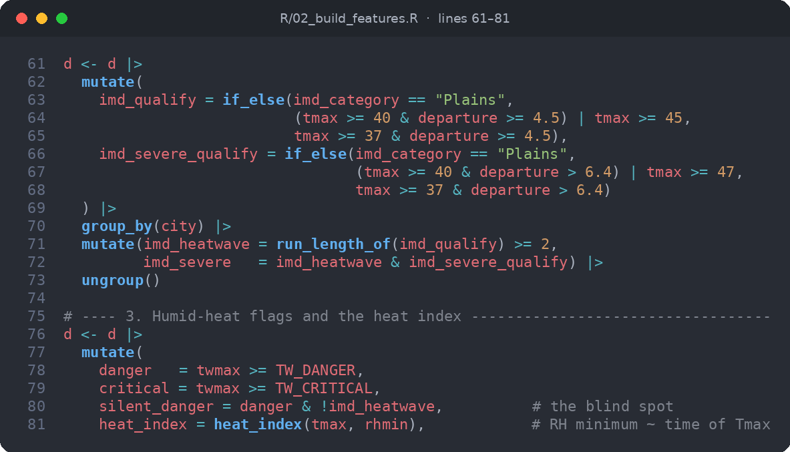
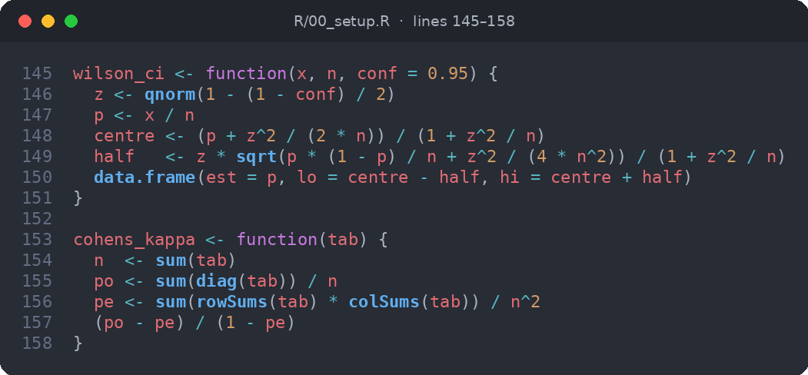
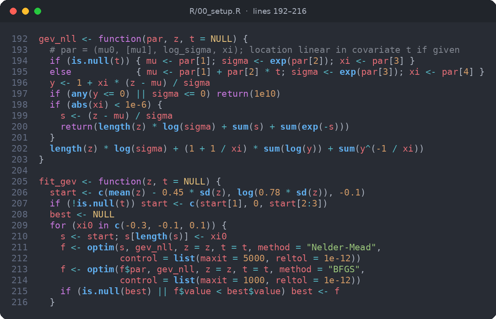
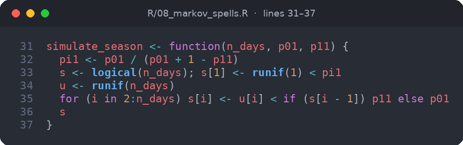
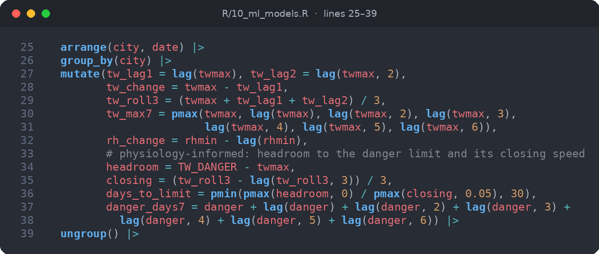
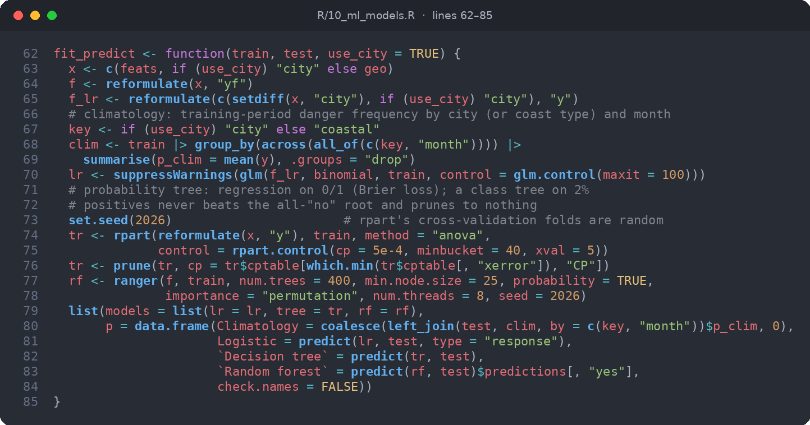
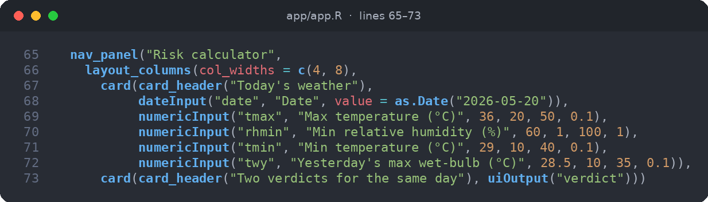

Probability & Statistics Lab · Assessment 10 · PPT + R code
How R carries the whole study, from raw data to the final slide
| Item | Location |
|---|---|
| Presentation (27 slides) | presentation/SilentHeat.pptx, with a PDF copy in presentation/SilentHeat.pdf |
| R code (~1,950 lines) | run_all.R, install.R, 12 scripts in R/, and the dashboard in app/app.R |
| Written report | report/report.pdf, generated from report/report.Rmd |
| Interactive dashboard | Rscript -e 'shiny::runApp("app")' |
| Slides | Content |
|---|---|
| 1–5 | Title, problem statement, literature review, the gap, and our six research questions |
| 6–9 | Pipeline block diagram, data (ERA5, 10 cities, 1981–2025), and the R toolkit |
| 10–15 | Why dry-bulb misses humid heat; RQ1 blind spot (96.3% missed) with its evidence; seasons; distributions |
| 16–19 | RQ2 trends (×1.54 per decade), RQ3 extremes (GEV), RQ4 Markov spells, RQ5 logistic warning (AUC 0.92) |
| 20–22 | RQ6 baseline ML: set-up and novelty, model comparison (random forest AUC 0.95), hybrid alert and transfer to unseen cities |
| 23–27 | Shiny dashboard, conclusions and recommendations, limitations, references, thank you |
Every chart on the slides is a ggplot2 figure produced by the R pipeline. Every number on the slides is read from the result tables R writes to outputs/tables/. Re-running the R code therefore updates the deck.
| Stage | R script | R packages | What R does |
|---|---|---|---|
| Orchestration | run_all.R | base R | Runs all 11 steps in order with timing; rebuilds everything in about 1.5 minutes |
| Data collection | 01_fetch_data.R | jsonlite | Calls the Open-Meteo API for ERA5 data, with retries and a local cache |
| Feature building | 02_build_features.R | dplyr, tidyr | Harmonic-regression climate normals, the official IMD heatwave rule on every day, wet-bulb danger flags, heat index |
| Exploratory analysis | 03_eda.R | ggplot2, ggridges | Descriptive statistics, Tmax–humidity correlation, wet-bulb regression, figures |
| Distributions | 04_distribution_fit.R | fitdistrplus, MASS | MLE fits of Normal, Gamma, Weibull and Lognormal; Poisson vs negative binomial for counts |
| RQ1 Blind spot | 05_blind_spot.R | base stats | Miss rate with Wilson, exact, block-bootstrap and Bayesian intervals; χ², McNemar, Cohen's κ |
| RQ2 Trends | 06_trends.R | MASS | Mann–Kendall and Sen's slope, negative-binomial GLM, Wilcoxon, Welch, KS, permutation tests, ANOVA with Tukey |
| RQ3 Extremes | 07_extremes_gev.R | own code, evd (check) | GEV maximum likelihood written from scratch, return levels, non-stationary GEV with likelihood-ratio test |
| RQ4 Spells | 08_markov_spells.R | base R | Two-state Markov chain, geometric spell lengths, Monte Carlo simulation by era |
| RQ5 Warning | 09_early_warning.R | pROC | Logistic regression, Brier skill score, ROC/AUC with DeLong CI, reliability diagram |
| RQ6 ML | 10_ml_models.R | rpart, ranger | Decision tree and random forest at 1–3 day leads, hybrid IMD + ML alert, leave-one-city-out transfer |
| Report | 11_render_report.R | knitr, markdown | Knits the report with live numbers and prints it to PDF |
| Dashboard | app/app.R | shiny, bslib | Blind spot, trends, extremes, and a risk calculator showing both verdicts |
Several methods were written from first principles in R/00_setup.R instead of being called from a package: GEV density, likelihood and return levels; the Mann–Kendall test with tie correction and Sen's slope; the Wilson confidence interval; Cohen's κ; Markov transition counts; Stull's wet-bulb formula; and the NWS heat index. We validated the GEV fit against evd::fgev, and the estimates agree to four decimal places.

run_all.R sources each step in a fresh environment and times it.
silent_danger is the blind spot.





Rscript install.R # install the 17 R packages
Rscript run_all.R # data → features → 6 analyses → ML → figures → report
Rscript -e 'shiny::runApp("app")' # interactive dashboard
SilentHeat · Probability & Statistics Lab · github.com/XArhaanshX/SilentHeat